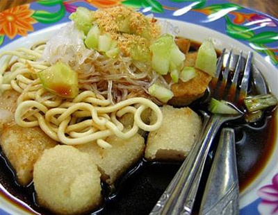

Pempek (Indonesian Fish Cake) Recipe

Description
Also known as Indonesian fish cake. Give a try.
Ingredients
For The Pempek
- 300 grams spanish mackerels (flesh of, ground)
- 100 millilitres warm water
- 1 teaspoon salt
- 200 grams sago palm flour
- 100 grams wholewheat flour
- 6 eggs (broken into a bowl)
For The Soup
- 750 millilitres water
- 5 cloves garlic (crushed)
- 5 chilli (chopped)
- 1 tablespoon soy sauce
- 150 grams brown sugar
- 1 teaspoon salt
- 3 tablespoons vinegar
- 2 cucumber (cut into cube sized pieces)
- 150 grams noodles (wet)
- 150 grams dried shrimp (ground)
Directions
-
Mix flesh of fish, warm water and salt. Add sago palm flour and wheat flour little by little while mixing until
itis mixed.
-
Form it oval (about 75g); make a hole in the middle by point finger. Then turn it around while pressed until it
becomes a pocket and put some broken raw egg in. Shut and close the hole tightly.
- Boil some water and add pempek one by one. Wait until pempek floats to the surface. Take them out and drain.
-
Soup: Boil some water. Put in garlic, chilies, soy sauce, sugar, brown sugar, and salt. Boil them until sugar is
dissolved. Filter the dregs. Add vinegar and mix it.
- Fry pempek in oil and then take them out and drain when they are brownish. 6. Serving: Cut fried pempek into
bite
sized pieces and put in a plate. Add noodles and cucumbers above them and pour the soup. Pempek kapal selam is
ready to be offered.